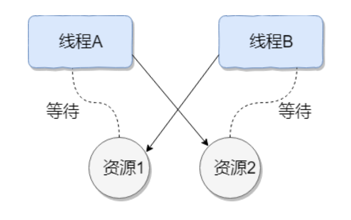
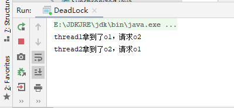
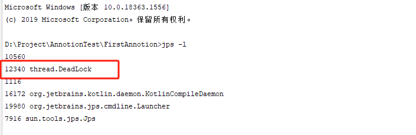
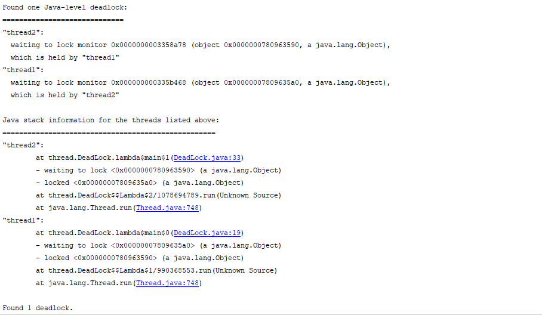

什么是死锁
线程死锁描述的是这样⼀种情况：多个线程同时被阻塞，它们中的⼀个或者全部都在等待某个资 源被释放。由于线程被⽆限期地阻塞，因此程序不可能正常终⽌。 如下图所示，线程 A 持有资源 2，线程 B 持有资源 1，他们同时都想申请对⽅的资源，所以这两 个线程就会互相等待⽽进⼊死锁状态。

死锁产生的必要条件
- 互斥条件：该资源任意⼀个时刻只由⼀个线程占⽤。
- 请求与保持条件：⼀个进程因请求资源⽽阻塞时，对已获得的资源保持不放。
- 不剥夺条件:线程已获得的资源在末使⽤完之前不能被其他线程强⾏剥夺，只有⾃⼰使⽤完毕 后才释放资源。
- 循环等待条件:若⼲进程之间形成⼀种头尾相接的循环等待资源关系。
示例：
1
2
3
4
5
6
7
8
9
10
11
12
13
14
15
16
17
18
19
20
21
22
23
24
25
26
27
28
29
30
31
32
33
34
35
36
37
38
| package thread;
import java.util.concurrent.TimeUnit;
public class DeadLock {
public static void main(String[] args) {
Object o1 = new Object();
Object o2 = new Object();
new Thread(()->{
synchronized (o1){
try {
System.out.println(Thread.currentThread().getName()+"拿到了o1，请求o2");
TimeUnit.SECONDS.sleep(1);
} catch (InterruptedException e) {
e.printStackTrace();
}
synchronized (o2){
System.out.println(Thread.currentThread().getName()+"成功拿到了o2");
}
}
},"thread1").start();
new Thread(()->{
synchronized (o2){
try {
System.out.println(Thread.currentThread().getName()+"拿到了o2，请求o1");
TimeUnit.SECONDS.sleep(1);
} catch (InterruptedException e) {
e.printStackTrace();
}
synchronized (o1){
System.out.println(Thread.currentThread().getName()+"成功拿到了o1");
}
}
},"thread2").start();
}
}
|
输出：

线程1和线程2获取了自身的资源后，都开始企图请求获取对⽅的资源，然后这两个线程就会陷⼊互相 等待的状态，这也就产⽣了死锁。
如何避免线程死锁?
- 破坏互斥条件 ：这个条件我们没有办法破坏，因为我们⽤锁本来就是想让他们互斥的（临界 资源需要互斥访问）。
- 破坏请求与保持条件 ：⼀次性申请所有的资源。
- 破坏不剥夺条件 ：占⽤部分资源的线程进⼀步申请其他资源时，如果申请不到，可以主动释 放它占有的资源。
- 破坏循环等待条件 ：靠按序申请资源来预防。按某⼀顺序申请资源，释放资源则反序释放。 破坏循环等待条件。
我们对线程 2 的代码修改成下⾯这样就不会产⽣死锁了。
1
2
3
4
5
6
7
8
9
10
11
12
13
| new Thread(()->{
synchronized (o1){
try {
System.out.println(Thread.currentThread().getName()+"拿到了o1，请求o2");
TimeUnit.SECONDS.sleep(1);
} catch (InterruptedException e) {
e.printStackTrace();
}
synchronized (o2){
System.out.println(Thread.currentThread().getName()+"成功拿到了o2");
}
}
},"thread2").start();
|
死锁测试，怎么排除死锁
- 使用
jps -l 定位进程号

- 使用
jstack 进程号 找到死锁问题
